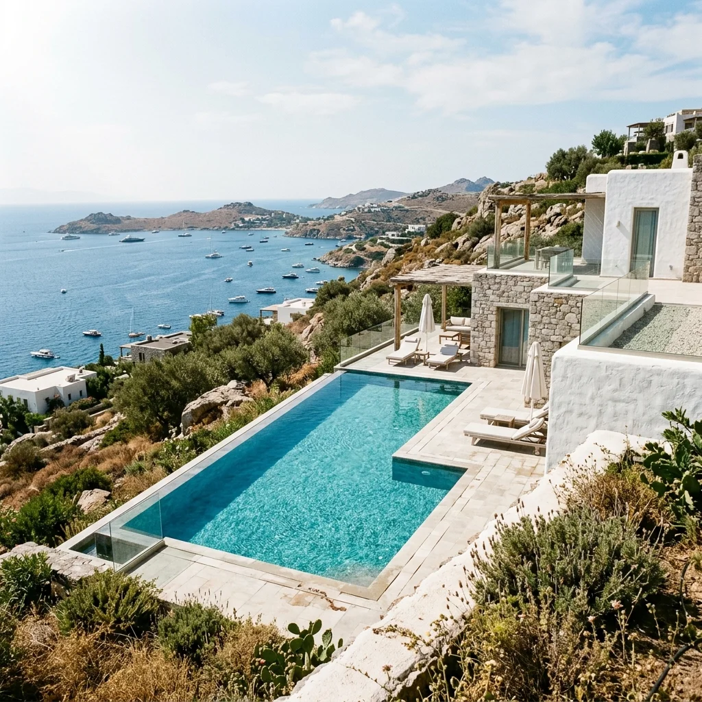

Бодрум давно перестал быть просто летним курортом; сегодня это направление мирового класса для ценителей роскоши. И в самом сердце этой трансформации находится Yalıkavak Marina — не просто пристань для яхт, а настоящий эпицентр эксклюзивного образа жизни.
Мировые Бренды и Эксклюзивный Шопинг
Прогуливаясь по набережной марины, вы оказываетесь в окружении флагманских бутиков самых престижных мировых брендов. От последних коллекций Dior, Louis Vuitton, Prada до эксклюзивных ювелирных изделий Bvlgari и Rolex. Yalıkavak Marina предлагает уровень шопинга, который можно сравнить разве что с Монако или Сен-Тропе.

Гастрономия Высокого Класса
Вечер в Ялыкаваке — это всегда гастрономическое путешествие. Здесь находятся одни из лучших ресторанов Турции. Легендарный Novikov предлагает изысканные блюда паназиатской кухни с видом на мега-яхты, а Zuma поражает своей современной японской гастрономией и непревзойденной атмосферой.
Мега-Яхты и Приватность
Марина признана лучшей мариной для супер-яхт в мире (Superyacht Marina of the Year). Это одно из немногих мест в Эгейском море, способное принимать яхты длиной до 140 метров. Для владельцев яхт и гостей здесь созданы все условия для абсолютной приватности и максимального комфорта.
Забронируйте Ваш Идеальный Вечер
Наш консьерж-сервис обеспечит вам лучшие столики в ресторанах Ялыкавака, VIP-трансфер на Майбахе или вертолете, а также персональный шопинг-ассистанс.
Связаться с Консьержем